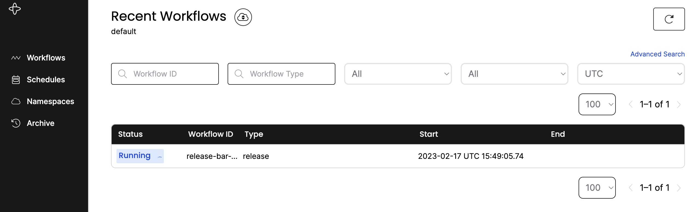
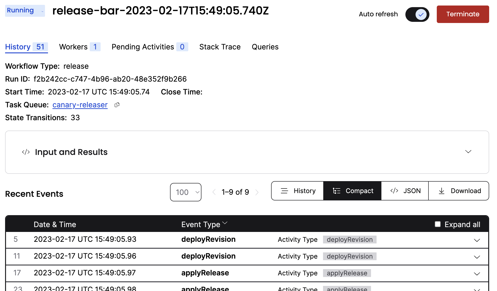
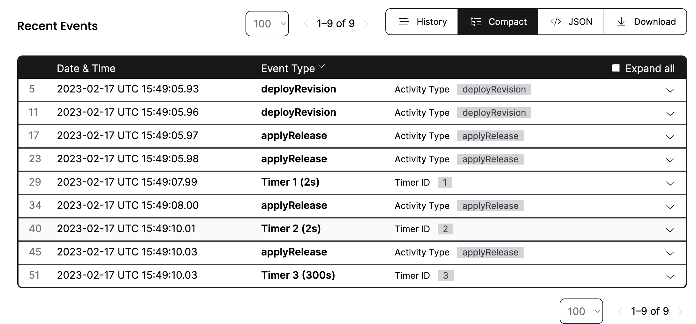
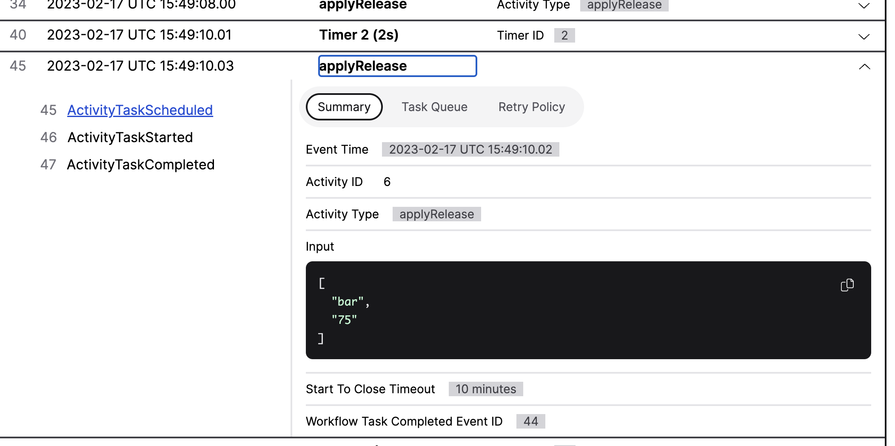
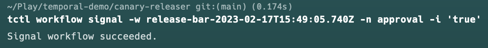
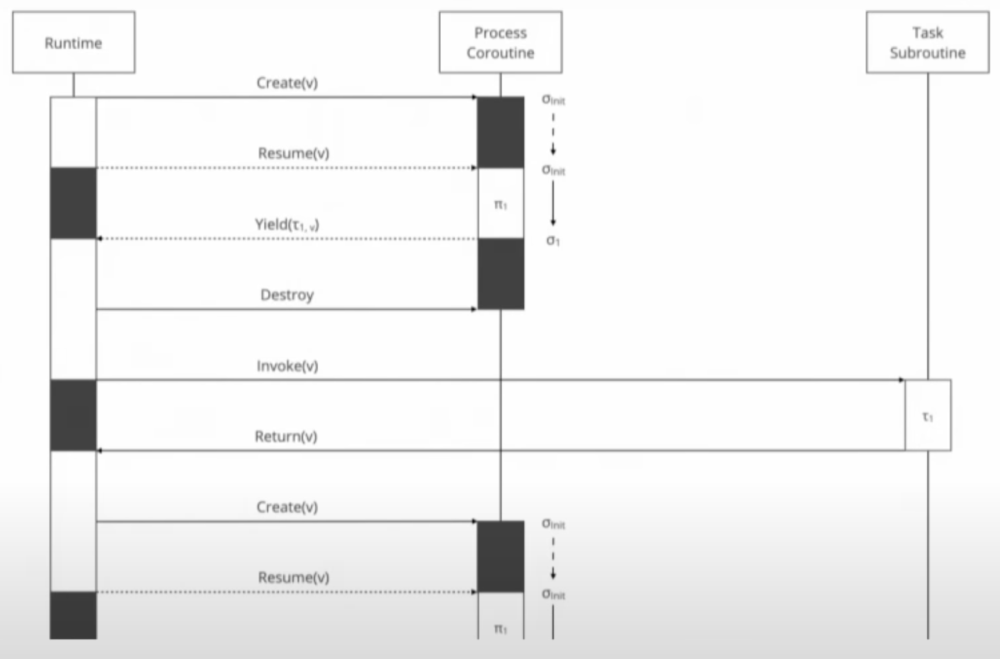

Why I'm Excited About a Temporal
# [Canary Release](https://martinfowler.com/bliki/CanaryRelease.html) Example
> Canary release is a technique to reduce the risk of introducing a new software version in production by slowly rolling out the change to a small subset of users before rolling it out to the entire infrastructure and making it available to everybody.
Note: I chose to implement a canary release script because there's an interesting [Temporal use case out of Datadog](https://temporal.io/case-studies/how-datadog-ensures-database-reliability-with-temporal) where they automated many of their devops runbooks and scripts. Also I figured I could use it to demonstrate some advantages of Temporal.
await deployRevision(rollbackRevision)
await deployRevision(nextRevision)
for(const stage of stages) {
if (stage.command === 'release') {
await applyRelease(nextRevision, stage.selector)
} else if (stage.command === 'delay') {
await waitForDelay(stage.seconds)
} else if (stage.command === 'waitForApproval') {
await waitForApproval()
}
}
await commitRelease(nextRevision)
Here's a rundown of our example script:
1. Ensure that the current revision is deployed. This could be copying an artifact and bouncing servers, a `kubectl apply` that pushed out a new deployment, or pushing a frontend artifact to the origin server of a CDN.
2. Ensure that the new revision is deployed.
3. Start to send traffic over to the new revision based on a release plan. This could involve changing some logic in a reverse proxy or using an edge function to redirect to the new revision based on some user properties.
4. Commit to the new revision after all steps are exhausted. Or if any problems are encountered rollback by committing to the current revision (not shown, but handled through an exit trap)
# Stage types
1. *Release* to users matching the selector (e.g. alpha/internal users, users bucketed into percentage pools, geography, etc.). The actual implementations of most of these steps are handwaved away, but assume that they're idempotent and can be represented by a `Promise`.
2. *Delay* for a certain amount of time
3. *Wait for approval* In a truly continuous release environment this shouldn't be necessary as you should be able to rely on automated tests and customer telemetry to perform rollbacks. However, that's not always the case and a lot of organizations want someone to have to "turn the key". Also, I wanted to demo waiting for manual confirmation.
Weaknesses of shell script implementation
Single Node/No Failover
Long sleeps tie up a volatile resource
Hard to observe
Approval through terminal interaction
* Single node: no failover if the process goes away
* Single process: Related to the above. I don't know about you, but relying on this process to run during an extended sleep makes me feel antsy. And in a cloud environment it might be the thing that prevents a VM from shutting down.
* Hard to observe: Even if we log, it's not exactly straightforward to query in realtime.
* Approval requires terminal interaction. Obviously suboptimal.
Of course, some of these are pretty easy to fix at the cost of some noise (e.g. logs and metrics). Some are more complicated (failover, interactivity)
Temporal demo
We'll do it live!

Start the workflow with: `yarn run run foo bar r:alpha r:10 d:2 r:50 d:2 r:75 w`
[Here's](http://127.0.0.1:8233/) what you see in the workflow server when you start a workflow from the client SDK.

Zooming in on the details for the workflow

We can also see the details about all of the activities that have run.

We can also expand the activities to see what arguments were sent to them. In this case, we see that the router has been told to start routing 75% of traffic to revision `bar` and is waiting for approval before finishing.

Send the signal with: `tctl workflow signal -w [workflow-id] -n approval -i 'true'`
Now we'll use the `tctl` utility to send an approval signal to the running workflow.
export async function(rollbackRevision, nextRevision, stages) {
await deployRevision(rollbackRevision)
await deployRevision(nextRevision)
for(const stage of stages) {
if (stage.command === 'release') {
await applyRelease(nextRevision, stage.selector)
} else if (stage.command === 'delay') {
await waitForDelay(stage.seconds)
} else if (stage.command === 'waitForApproval') {
await waitForApproval()
}
}
await commitRelease(nextRevision)
}
Wrap the workflow in a function and export it.
// workflow.ts
import { proxyActivities } from '@temporalio/workflow';
import type * as activities from './activities.js';
const {
deployRevision, applyRelease, commitRelease
} = proxyActivities<typeof activities>({
startToCloseTimeout: '10 minutes',
});
export async function(rollbackRevision, nextRevision, stages) {
...
}
Next we add this block to the top of the workflow.
1. We import `proxyActivities` from Temporal's SDK.
2. We import the types only from `activities`. Note that this is not a runtime dependency because the workflow is executed separated from the activities. But by having this type import the proxy object is typesafe.
3. Speaking of the proxy object, here's where we can configure things like timeouts, queue names, and more. We destructure the proxy object to get drop in replacements for our activities.
4. At this point we have a workflow! But we need two more things: something to run it (a "worker") and something to trigger it (a "client")
// worker.ts
import { Worker } from '@temporalio/worker';
import * as activities from './activities.js';
async function run() {
const worker = await Worker.create({
workflowsPath: './workflow.ts',
activities,
taskQueue: 'canary-releaser',
});
await worker.run();
}
run().catch((err) => { console.error(err); process.exit(1); });
This is the worker pretty much verbatim from the demo.
1. This time we import everything from `activities`
2. We'll pass that into the `Worker.create` factory
3. We also pass the *filepath* of the workflow in. This may seem strange, but this has to do with how the workflows and bundled up (with Webpack) to be run in a sandbox. This is done partly to help ensure that workflows are deterministic. (Certain libraries are excluded, like network access.)
4. We also set the `taskQueue` that the worker will listen to.
5. Finally we run the worker.
// client.tsx
import { Connection, Client } from '@temporalio/client';
import { release } from './workflow.js';
const connection = await Connection.connect();
const client = new Client({ connection, });
const handle = await client.workflow.start(release, {
args: [rollbackRevision, nextRevision, stages],
taskQueue: 'canary-releaser',
workflowId: `release-${nextRevision}-${new Date().toISOString()}`,
});
console.log(`Started workflow ${handle.workflowId}`);
This is also pretty much verbatim. To start a workflow we
1. Connect to the Temporal server (additional arguments can be specified for host, mTLS, etc.)
2. We create a client object to mediate our communication with the server.
3. We use the client to start a workflow, specifying the workflow function, its args (typesafe!)
4. ...the task queue, and the id of the flow.
5. Finally we output the handle and exit.
const approval = new Trigger()
const approvalSignal = defineSignal<[boolean]>('approval')
async function waitForApproval() {
console.info("Waiting for approval.", {})
setHandler(approvalSignal, (answer) => answer ?
approval.resolve(true) :
approval.reject(ApplicationFailure.nonRetryable("Approval denied. Release cancelled.")))
return Promise.race([
approval,
sleep('5 minutes')
])
}
Here we add interactivity using a Temporal concept called "signals". Signals are meant to allow external clients to make changes to a running workflows.
1. We create a `Trigger` object, which represents a `Promise`-like object.
2. We define a signal.
3. We set the signal handler. If the signal carries a truthy payload we resolve the trigger. Otherwise we reject it with a failure that will halt retries and cancel the workflow.
5. We use `Promise.race` to enforce a 5 minute timeout. Note that the `sleep` function is Temporal's sleep, which means that Temporal schedules it to revive so it doesn't tie up system resources on the worker machine.
let stage: Stage
const stageQuery = defineQuery('stage')
export async function release(rollbackRevision: Revision, nextRevision: Revision, stages: Array) {
setHandler(stageQuery, () => stage)
...
for(stage of stages) {
...
Similar to signals, Queries are meant to give a caller some sort of information about the running workflow state. In this case, I've added a handler that makes that `stage` variable available.

Screenshotted from "Workflows, a new abstraction for distributed systems" by Dominik Tornow (Strange Loop 2022)
1. Client tells the Temporal server to start the workflow
2. Temporal server tells the worker to start running workflow code (through a task queue)
3. The worker executes the workflow reaches the first `await` that calls an activity. Instead of directly executing the activity, the worker passes the activity and its arguments back to the Temporal service. The Temporal server kills the workflow execution.
4. Any worker listening to the task queue, picks up the activity task and runs it, sending the result back to the Temporal server.
Constraints
Workflows must be deterministic
Activities must be idempotent
Sounds too good to be true, right? Well, there are a few constraints. But all in all, they're better than writing workflows in JSON and ultimately they're pretty good practices for distributed systems.
Since the Temporal server is building up a "event history" of activity steps and their results and then replaying them on repeated executions, this imposes two constraints:
1. Activities must be idempotent (so rerunning them is equivalent to a no-op)
2. Workflows must be deterministic (which is why they're sandboxed and non-random)
# Why should you use Temporal?
If you want a modern workflow system that'll guarantee that your business logic runs to completion
Also...
* Micoservice orchestration!
* Automating runbooks!
* Back office processes!
Why shouldn't you use Temporal? (Yet, maybe)
* Cloud offering is currently only available for >$200/month
* Lower/free tiers expected in 2H
* DIY production clusters are somewhat complex
* Multiple separate component services
* Postgres or Cassandra
* Elasticsearch (optional)
Going Further
Multi-language
Different workers for different activities
Better timeouts
Frontend application
References & Acknowledgements
Extra slides where I talk about Workflow Engines...
The Past
(& Present in many cases)
At least for me...
Oozie
Airflow
AWS Step Functions
Just to give a quick rundown of my experience with workflow engines, the first one I used was Oozie.
Oozie was a key part of many Hadoop stacks. It's workflows were defined in XML and its tasks were usually Java classes.
Next I used Airflow. Airflow tasks are Python methods and its workflows are defined in Python as directed acyclic graphs. Unfortunately, these graphs are static, so it's not like having the full facilities of a programming language.
More recently, I've used AWS Step Functions. Like Oozie, the workflows are defined in a markup language (JSON/YAML instead of XML) and its tasks are Lambdas.
Why is it so hard to get the same expressivity to describe a workflow that we're used to having in regular programming languages?
Why is it so hard to get the same expressivity to describe a workflow that we're used to having in regular programming languages?
Why do so many of them use markup languages?
My suspicion is because writing a new programming language is right there with writing a new workflow engine on my list of Things Not to Do, so what are the chances you can find someone who can do both well?
Fortunately, the authors of Temporal seem to agree that this is a problem and have come up with a solution: use regular programming languages. No contorted abuse of YAML. Not toy DSLs. Real code, with a few constraints (which we'll get to).
How?
Durable executions
Event histories
Temporal accomplishes this by choosing the right abstraction: durable executions. This means that as workflow code runs, whenever it calls out to its tasks to get something done in the world, those executions are monitored for failure and results are logged to storage. This guarantees exactly once semantics. Much as a database runtime guarantees transactions either succeed or rollback, durable executions push the replay concerns to the platform.
Let's look at an example.